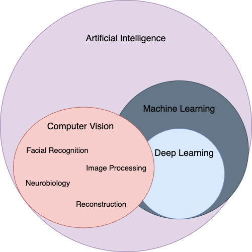
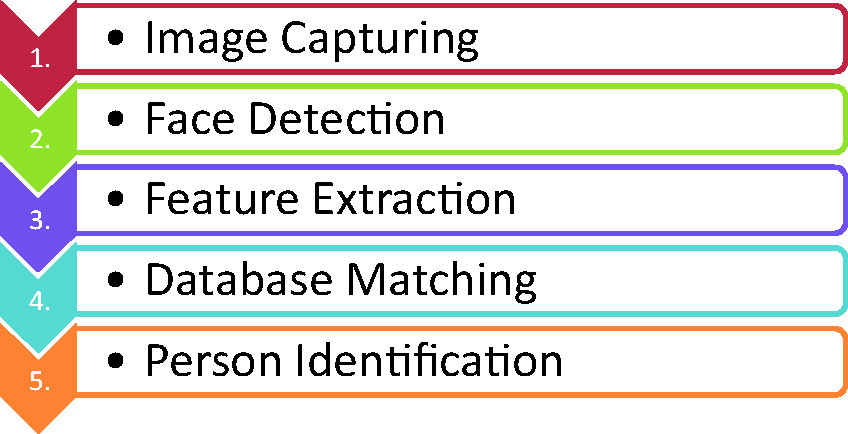
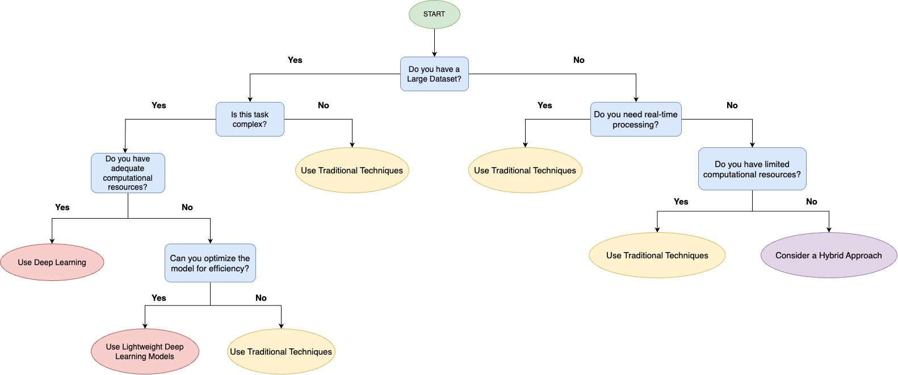

1 Facial Recognition User Guide
Compared to 20 years ago, the field of Artificial Intelligence has significantly transformed how machines can be used and the industries to which they can be applied. One of the key applications of AI in this area is computer vision. This guide will introduce you to the fundamentals of computer vision, with a special focus on facial recognition, and help you choose the most effective tools and approaches for your projects.
1.1 Prerequisite
Basic understanding of machine learning, deep learning concepts, and some experience with Python is preferred to fully grasp this user guide.
1.2 Motivation
When I first started learning about machine learning and deep learning, the vast amount of information on the subject available was overwhelming. Like many beginners, I struggled with knowing where to start, what tools to use, and how to apply my knowledge to navigating a project. I realized that many people face the same challenges I did. That’s why I decided to create this user guide.
I wanted to build a resource that would help others who are just starting out in this field, particularly those who, like me, are eager to dive into a deep learning project but are unsure where to begin. This guide is designed to be accessible to beginners, offering clear explanations and step-by-step instructions. It’s not just for those who want to understand theory but for anyone who’s ready to start building and experimenting with machine learning models.
My goal is to provide a practical, hands-on resource for building real-world projects. This will help newcomers feel more confident in their ability to apply machine learning and deep learning concepts. By breaking down complex topics into manageable parts, anyone can start on their own deep learning journey and see the potential of these powerful technologies.
1.3 What is Computer Vision?
Computer vision is a subfield of computer science focused on giving machines the ability to interpret, understand, and analyze visual information. The goal of computer vision is to enable machines to mimic human vision, allowing them to ‘see’ and interpret their surroundings Learn Computer Vision Using OpenCV: With Deep Learning CNNs and RNNs (n.d.). While AI allows machines to think, computer vision specializes in allowing them to perceive, observe, and understand visual data Matsuzaka and Yashiro (2023). This process typically involves several key steps, such as data preprocessing, feature extraction, model selection, and model evaluation Balasubramanian et al. (2022).

1.4 Facial Recognition
The face is a key element of human identity, serving as a unique identifier and revealing characteristics such as emotions and age. These features are important for recognition, allowing identification based on facial structure and expressions. Facial recognition technology has numerous practical applications, including bank card identification, access control, mugshot searches, security monitoring, and surveillance systems Zhao et al. (2003).
To better understand how these applications work, let’s explore the key steps involved in facial recognition, as illustrated in Figure 2 and explained below.

Image Capture:
- The probe image, or the initial photograph used for recognition, is captured using a still camera or CCTV, either with or without the subject’s knowledge.
Face Detection:
- In this step, the system identifies and isolates the face from the rest of the image, allowing it to focus on the relevant facial features for further analysis.
Feature Extraction:
- Key facial features, such as the distance between the eyes or the shape of the nose, are extracted from the detected face for comparison with database images.
- This process creates a unique face template for identification.
Matching:
- The generated face template is compared with images in a database. If the features match, the individual’s identity is verified.
- This step is crucial for ensuring accurate identification in practical applications.
Identification:
- The final step involves either verifying the individual’s identity (1:1 comparison) or identifying them from a larger database (1:N comparison).
- This step is important for confirming or recognizing the person in real-world scenarios.
1.5 Comparison of Software Packages & Libraries
OpenCV
The name OpenCV comes from “open-source computer vision” Hasan and Sallow (2021). The OpenCV library is widely known as one of the most accessible tools for facial recognition with Python Kumari Sirivarshitha et al. (2023). It is well-suited for a variety of computer vision tasks, including object tracking, image processing, and transformations like resizing and filtering Learn Computer Vision Using OpenCV: With Deep Learning CNNs and RNNs (n.d.).
When using OpenCV for facial recognition, the performance and accuracy depend heavily on the quality of the training data. Low-quality images can lead to detection failures, and an excessive number of categories in the training data may cause slower processing times Gupta and Garg (n.d.). Despite these challenges, OpenCV is generally efficient for real-time applications. However, it does require large datasets when working with deep learning models. Advanced features often require additional setup and integration with deep learning frameworks like TensorFlow or PyTorch “(PDF) Comparative Approach for Face Detection in Python, OpenCV and Hardware” (n.d.). Fortunately, it is relatively easy to implement, thanks to its large community and extensive documentation. Furthermore, OpenCV is optimized for low-memory environments, making it ideal for resource-constrained devices such as smartphones and embedded systems Singh et al. (2022).
TensorFlow/Keras
TensorFlow is a deep learning framework, while Keras is a high-level API built on top of TensorFlow, often used together for developing deep learning models. These tools are ideal for handling large-scale datasets and can leverage GPUs and TPUs to accelerate computations Abadi et al. (2016).
TensorFlow/Keras offers high flexibility in building custom models, particularly Convolutional Neural Networks (CNNs), which are commonly used in image-related tasks LeCun, Bengio, and Hinton (2015). However, their performance depends heavily on the quality and size of the dataset. Models require large amounts of labeled data to train effectively, and the ability to generalize and avoid overfitting is directly influenced by both the quantity and quality of this data Hands-On Machine Learning with Scikit-Learn, Keras, and TensorFlow, 2nd Edition (n.d.). Therefore, TensorFlow/Keras is best suited for applications with access to large, well-labeled datasets.
In addition to data requirements, TensorFlow/Keras also demands a solid understanding of deep learning concepts such as layers, optimizers, and loss functions (modiFlowPMDistributedTensorFlow202?). Although Keras simplifies many tasks with its high-level API, implementing advanced features still requires a deep understanding of the underlying principles. Training deep learning models on large datasets is computationally expensive and often requires GPUs or TPUs for efficient processing “Deep Learning with Python” (n.d.). This can significantly increase the time required for training and the resources needed, making TensorFlow/Keras less suitable for resource-constrained environments.
Scikit-learn
Scikit-learn is a beginner-friendly machine learning library that offers simple and efficient tools for data mining and analysis. It includes popular machine learning algorithms, such as classification, regression, and clustering. Thanks to its integration with Python, it’s easy to use and accessible, making it a great starting point for new users. Plus, scikit-learn comes with helpful documentation and examples to guide you as you learn “Developer’s Guide” (n.d.).
Scikit-learn achieves high performance through two main optimizations:
- Reduced Memory Usage: It avoids unnecessary data copies, speeding up calculations and reducing processing time by up to 40%.
- Efficiency with Large Datasets: Scikit-learn optimizes the underlying libsvm library (used for support vector machines) to handle large datasets more efficiently “(PDF) Scikit-learn: Machine Learning in Python” (2024).
While scikit-learn is ideal for small and medium-sized datasets, it can be less efficient with very large datasets compared to libraries designed for handling big data, like TensorFlow or PyTorch Machine Learning with PyTorch and Scikit-Learn (n.d.). However, scikit-learn’s strength lies in its ease of implementation. Its simple API lets users set up and run machine learning models without needing in-depth knowledge of machine learning concepts.
In terms of computational efficiency, scikit-learn is well-suited for systems with limited memory and is optimized for resource-constrained environments. However, for large datasets or complex tasks like deep learning, you might need additional resources or consider integrating scikit-learn with other tools, such as TensorFlow or PyTorch, for better performance
1.6 Choosing the Right Approach
When building computer vision systems, one of the first decisions you’ll face is whether to use traditional image processing techniques or deep learning models. The choice depends on factors like the size of your dataset, the computational power available, and the level of accuracy needed. Each approach has its strengths. For example, imagine you’re building a system to recognize faces in images. If you only have a small set of images, traditional techniques might be enough. However, if you have thousands of images or need to detect faces in different lighting and angles, deep learning would likely be the better choice.
In this section, we’ll explore when deep learning is the best choice and when traditional techniques might be more practical. We’ll also discuss how to select the most suitable model based on dataset size, computational resources, and the accuracy your project demands. Below is a decision tree illustration in Figure 3 for your reference.

- When to Use Deep Learning vs Traditional Computer Vision Techniques:
When building computer vision systems, you’ll often need to decide whether to use deep learning models or traditional image processing techniques.
Use deep learning when:
- You have a large dataset (hundreds or thousands of images).
- The task is complex and requires high accuracy, such as recognizing faces in various lighting conditions or detecting multiple objects in an image LeCun, Bengio, and Hinton (2015).
- You need to handle variations in the data, like changes in angle or background. Deep learning models like Convolutional Neural Networks (CNNs) excel at recognizing complex patterns in data Goodfellow, Bengio, and Courville (2016).
Use traditional techniques when:
- You have a smaller dataset (fewer images).
- Your project requires faster processing and lower resource usage. Traditional methods like Haar cascades are quicker to set up and run, but they may not be as accurate, especially in challenging conditions like poor lighting or strange angles Lowe (2004).
- You’re working with limited computational resources.
In some cases, a hybrid approach, using both traditional methods and deep learning can be the best of both worlds Yafouz et al. (2021). For instance, you might use traditional methods to quickly find faces in images and then apply deep learning to identify specific emotions or age Viola and Jones (2001).
- Choosing the Best Model Based on Dataset Size, Computational Resources, and Accuracy Needs:
When selecting a model for your project, there are three key factors to consider: the size of your dataset, the computational power of your system, and the accuracy you require. Here’s a simple guide on how to choose the right model based on these factors:
Small Dataset & Limited Resources:
If you have a small dataset and limited computational power, traditional image processing techniques are often the best option. These methods, like Haar cascades in OpenCV, feature-based methods, or simple machine learning models in Scikit-learn, are quick to implement and run efficiently. While they may not handle complex variations such as changing lighting or backgrounds, they are great for simpler tasks like face detection or object recognition when you have limited data.
Large Dataset & Adequate Resources:
If you have a large dataset and access to more computational resources, deep learning models like Convolutional Neural Networks (CNNs) are ideal. Deep learning models excel at learning complex patterns and can process large and varied datasets like images with different lighting, angles, or backgrounds. These models do require more time to train and more computing power, but they offer much higher accuracy, especially for complex tasks.
Real-Time Applications:
If your project requires processing data in real time, such as detecting faces in a video feed or tracking objects live, the efficiency of your computer becomes crucial. Traditional methods like Haar cascades are fast and lightweight, making them perfect for quick processing Viola and Jones (2001). However, if you need more accuracy, you can use lightweight deep learning models optimized for speed without sacrificing too much accuracy.
In general, deep learning excels at handling complex tasks, particularly when working with large datasets and requiring high accuracy. On the other hand, traditional computer vision methods are still effective for simpler tasks, especially in situations where the dataset is small or computational resources are limited. The decision to use deep learning or traditional techniques ultimately depends on factors such as the size of your dataset, the available computational power, and the accuracy your project demands.
1.7 Conclusion and Getting Started with Your Project
Building a computer vision system involves a lot of decisions, but with the right approach, tools, and mindset, you can achieve great results. By understanding when to use deep learning versus traditional computer vision techniques and knowing how to choose the best model for your dataset, computational resources, and accuracy needs, you are well on your way to mastering the fundamentals of machine learning.
Remember, every project is an opportunity to learn. If you’re just getting started, Scikit-learn is an excellent first tool for tackling smaller projects like basic face detection or image classification. If you’re ready to dive into deep learning, TensorFlow/Keras offers the flexibility and power needed to build complex models like Convolutional Neural Networks (CNNs). For real-time applications or if you’re working with limited resources, OpenCV will allow you to implement efficient solutions quickly.
Next steps:
- Try a beginner project: Start with a simple image classification task using Scikit-learn. It’s a great way to practice the basics before moving to more complex models.
- Take on a deep learning challenge: Once you’re comfortable, dive into TensorFlow/Keras for a project like facial recognition or object detection.
- Experiment with OpenCV: For real-time applications, try building a basic face detection system using Haar cascades and see how it performs.
For further resources, check out these official documentation sites:
- Scikit-learn Documentation: Excellent for understanding basic machine learning concepts.
- TensorFlow Documentation: Dive deeper into deep learning models with detailed guides and tutorials.
- OpenCV Documentation: Learn about efficient image processing and real-time computer vision tasks.
If you ever get stuck, don’t hesitate to seek help from the community. Platforms like Stack Overflow, Reddit’s r/MachineLearning, and Kaggle are full of people who were once beginners like you, and they are ready to offer advice and support.
Good luck on your journey into machine learning, and remember, learning to build powerful models takes time, practice, and persistence. Keep experimenting and exploring, and most importantly, have fun!